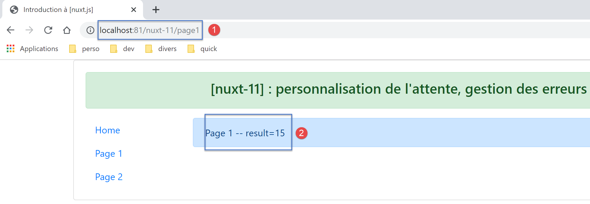
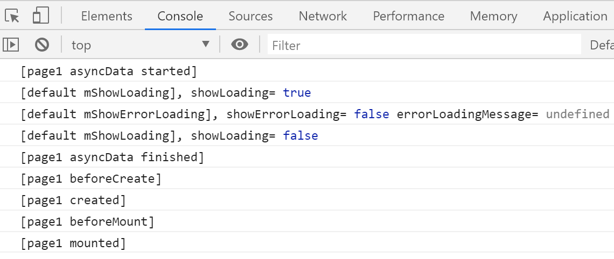

14. Ejemplo [nuxt-11]: Personalización de la imagen de carga
Por defecto, la imagen de carga de [nuxt] es una barra de progreso. El ejemplo [nuxt-11] muestra que puedes sustituirla por tu propia imagen de carga:

El ejemplo [nuxt-11] también muestra cómo gestionar los errores de carga.

El ejemplo [nuxt-11] se deriva inicialmente del ejemplo [nuxt-10]:

En [1], añadiremos un complemento para el cliente que se encargará de gestionar los eventos entre componentes.
14.1. El complemento [event-bus]
El complemento [event-bus] se ejecutará tanto en el cliente como en el servidor, pero veremos que no funciona en el lado del servidor. Su código es el siguiente:
// on crée un bus d'événements entre les vues
import Vue from 'vue'
export default (context, inject) => {
// le bus d'événements
const eventBus = new Vue()
// injection d'une fonction [eventBus] dans le contexte
inject('eventBus', () => eventBus)
}
- línea 5: el bus de eventos es una instancia de la clase [Vue]. Esta clase proporciona métodos para gestionar eventos:
- [$emit]: para emitir un evento;
- [$on]: para escuchar un evento específico;
Este bus de eventos gestionará un solo evento, [loading], que será utilizado por las páginas para iniciar/detener la animación de carga mientras se espera a que se complete una función asíncrona;
- línea 7: creamos una función [$eventBus] (primer argumento) cuya función será devolver el objeto [eventBus] que acabamos de crear (segundo argumento). Esta función se inyecta en el contexto para que esté disponible en los objetos [context.app] y [this] de las páginas;
14.2. El diseño [default.vue]
El diseño [default.vue] evoluciona de la siguiente manera:
<template>
<div class="container">
<b-card>
<!-- un message -->
<b-alert show variant="success" align="center">
<h4>[nuxt-11] : personnalisation de l'attente, gestion des erreurs</h4>
</b-alert>
<!-- la vue courante du routage -->
<nuxt />
<!-- loading -->
<b-alert v-if="showLoading" show variant="light">
<strong>Requête au serveur de données en cours...</strong>
<div class="spinner-border ml-auto" role="status" aria-hidden="true"></div>
</b-alert>
<!-- erreur de chargement -->
<b-alert v-if="showErrorLoading" show variant="danger">
<strong>La requête au serveur de données a échoué : {{ errorLoadingMessage }}</strong>
</b-alert>
</b-card>
</div>
</template>
<script>
/* eslint-disable no-console */
export default {
name: 'App',
data() {
return {
showLoading: false,
showErrorLoading: false
}
},
// life cycle
beforeCreate() {
console.log('[default beforeCreate]')
},
created() {
console.log('[default created]')
// listen to the evt [loading]
this.$eventBus().$on('loading', this.mShowLoading)
// and the [errorLoadingMessage] event
this.$eventBus().$on('errorLoading', this.mShowErrorLoading)
},
beforeMount() {
console.log('[default beforeMount]')
},
mounted() {
console.log('[default mounted]')
},
methods: {
// load management
mShowLoading(value) {
console.log('[default mShowLoading], showLoading=', value)
this.showLoading = value
},
// loading error
mShowErrorLoading(value, errorLoadingMessage) {
console.log('[default mShowErrorLoading], showErrorLoading=', value, 'errorLoadingMessage=', errorLoadingMessage)
this.showErrorLoading = value
this.errorLoadingMessage = errorLoadingMessage
}
}
}
</script>
- líneas 11–14: la animación de carga. Solo se muestra si la propiedad [showLoading] es true (línea 29);
- líneas 16–18: el mensaje de error de carga. Solo se muestra si la propiedad [showErrorLoading] (línea 30) es true;
- líneas 29-30: cuando el componente se carga inicialmente, la animación de carga se oculta, al igual que el mensaje de error;
- líneas 37–43: al crearse, la página escucha el evento [loading] (primer argumento) en el bus de eventos creado por el complemento. Al recibirlo, ejecuta el método [mShowLoading] de las líneas 52–55 (segundo argumento);
- líneas 52-55: el valor recibido por el método [mShowLoading] será un booleano (verdadero/falso). Se utiliza para mostrar u ocultar el mensaje de carga;
- líneas 41–42: Cuando se crea la página, esta escucha el evento [errorLoading] (primer argumento) en el bus de eventos creado por el complemento. Al recibirlo, ejecuta el método [mShowErrorLoading] en las líneas 57–61 (segundo argumento);
- línea 57: el método [mShowErrorLoading] toma dos argumentos:
- el primer argumento es un valor booleano (true/false) para mostrar u ocultar el mensaje de error;
- el segundo argumento solo está presente si se ha producido un error. Representa el mensaje de error que se va a mostrar;
- Los registros de las líneas 53 y 58 nos mostrarán que los métodos [showLoading] y [showErrorLoading] no se ejecutan en el lado del servidor;
14.3. La página [page1]
El código de la página [page1] cambia de la siguiente manera:
<!-- vue n° 1 -->
<template>
<Layout :left="true" :right="true">
<!-- navigation -->
<Navigation slot="left" />
<!-- message-->
<b-alert slot="right" show variant="primary"> Page 1 -- result={{ result }} </b-alert>
</Layout>
</template>
<script>
/* eslint-disable no-console */
/* eslint-disable nuxt/no-timing-in-fetch-data */
import Navigation from '@/components/navigation'
import Layout from '@/components/layout'
export default {
name: 'Page1',
// components used
components: {
Layout,
Navigation
},
// asynchronous data
asyncData(context) {
// log
console.log('[page1 asyncData started]')
// start waiting
context.app.$eventBus().$emit('loading', true)
// no error
context.app.$eventBus().$emit('errorLoading', false)
// we make a promise
return new Promise(function(resolve, reject) {
// we simulate an asynchronous function
setTimeout(function() {
// end waiting
context.app.$eventBus().$emit('loading', false)
// log
console.log('[page1 asyncData finished]')
// we make the result asynchronous - a random number here
resolve({ result: Math.floor(Math.random() * Math.floor(100)) })
}, 5000)
})
},
// life cycle
beforeCreate() {
console.log('[page1 beforeCreate]')
},
created() {
console.log('[page1 created]')
},
beforeMount() {
console.log('[page1 beforeMount]')
},
mounted() {
console.log('[page1 mounted]')
}
}
</script>
- Los cambios se producen en la función [asyncData], en las líneas 26–47;
- líneas 29-30: Antes de que comience la función asíncrona, se emite el evento [loading] a las demás páginas de la aplicación. Tenga en cuenta que en [asyncData] aún no tenemos acceso al objeto [this], que todavía no se ha creado. Por lo tanto, utilizamos el contexto pasado como argumento a la función [asyncData] (línea 26);
- línea 30: se utiliza el bus de eventos para indicar que la carga está a punto de comenzar;
- línea 38: Utilizamos el bus de eventos para indicar que la carga ha finalizado;
Nota: En tiempo de ejecución, cuando se solicita la página [page1] al servidor, no se muestra la imagen de carga. En los registros, vemos que, en el lado del servidor, no se llama al método [default.mShowLoading]. En cualquier caso, ver la imagen de carga no tiene sentido cuando se solicita la página al servidor. El servidor solo envía la página al navegador del cliente una vez que la función [asyncData] ha finalizado. Por lo tanto, la imagen de carga es innecesaria. Este será el caso para todas las páginas de la aplicación solicitadas directamente al servidor.
14.4. La página [index]
El código de la página [index] es el siguiente:
<!-- page principale -->
<template>
<Layout :left="true" :right="true">
<!-- navigation -->
<Navigation slot="left" />
<!-- message-->
<b-alert slot="right" show variant="warning">
Home
</b-alert>
</Layout>
</template>
<script>
/* eslint-disable no-undef */
/* eslint-disable no-console */
/* eslint-disable nuxt/no-env-in-hooks */
/* eslint-disable nuxt/no-timing-in-fetch-data */
import Navigation from '@/components/navigation'
import Layout from '@/components/layout'
export default {
name: 'Home',
// components used
components: {
Layout,
Navigation
},
// asynchronous data
asyncData(context) {
// log
console.log('[page1 asyncData started]')
// start waiting
context.app.$eventBus().$emit('loading', true)
// no error
context.app.$eventBus().$emit('errorLoading', false)
// we make a promise
return new Promise(function(resolve, reject) {
// we simulate an asynchronous function
setTimeout(function() {
// end waiting
context.app.$eventBus().$emit('loading', false)
// log
console.log('[page1 asyncData finished]')
// we return an error
reject(new Error("le serveur n'a pas répondu assez vite"))
}, 5000)
}).catch((e) => context.error({ statusCode: 500, message: e.message }))
},
// life cycle
beforeCreate() {
console.log('[home beforeCreate]')
},
created() {
console.log('[home created]')
},
beforeMount() {
console.log('[home beforeMount]')
},
mounted() {
console.log('[home mounted]')
// no error
this.$eventBus().$emit('errorLoading', false)
}
}
</script>
- líneas 30–49: la función [asyncData] es idéntica a la de la página [page1], con una excepción: en la línea 46, la función asíncrona se interrumpe en caso de fallo (utilizando el método [reject]);
- línea 46: el parámetro de la función [reject] es una instancia de la clase [Error]. El parámetro del constructor [Error] es el mensaje de error;
- línea 48: este error es capturado por el método [catch] de [Promise], que recibe el error como parámetro. A continuación, utilizamos la función [context.error] para informar del error. El parámetro de la función [context.error] es aquí un objeto con dos propiedades:
- [statusCode]: un código de error HTTP;
- [message]: un mensaje de error;
Tanto si [asyncData] se ejecuta en el cliente como en el servidor, en caso de un [context.error], [nuxt] muestra la página [layouts/error.vue]:

Aunque se trata de una página, la página [error.vue] se busca en la carpeta [layouts] (¿quizás para evitar que se incluya en las rutas de la aplicación?). Aquí, la página [error.vue] es la siguiente:
<!-- définition HTML de la vue -->
<template>
<!-- mise en page -->
<Layout :left="true" :right="true">
<!-- alerte dans la colonne de droite -->
<template slot="right">
<!-- message sur fond jaune -->
<b-alert show variant="danger" align="center">
<h4>L'erreur suivante s'est produite : {{ JSON.stringify(error) }}</h4>
</b-alert>
</template>
<!-- menu de navigation dans la colonne de gauche -->
<Navigation slot="left" />
</Layout>
</template>
<script>
/* eslint-disable no-undef */
/* eslint-disable no-console */
/* eslint-disable nuxt/no-env-in-hooks */
import Layout from '@/components/layout'
import Navigation from '@/components/navigation'
export default {
name: 'Error',
// components used
components: {
Layout,
Navigation
},
// property [props]
props: { error: { type: Object, default: () => 'waiting ...' } },
// life cycle
beforeCreate() {
// client and server
console.log('[error beforeCreate]')
},
created() {
// client and server
console.log('[error created, error=]', this.error)
},
beforeMount() {
// customer only
console.log('[error beforeMount]')
},
mounted() {
// customer only
console.log('[error mounted]')
}
}
</script>
Cuando [nuxt] renderiza la página [error.vue], le pasa el error que se ha producido como una propiedad [props] (línea 33). Si el error fue causado por [context.error(object1)], la propiedad [props] de la página [error.vue] tendrá el valor [object1]. La documentación de [nuxt] indica que [object1] debe tener al menos los atributos [statusCode, message]. La línea 9 muestra la cadena JSON del objeto [object1] recibido.
14.5. La página [page2]
La página [page2] muestra otra forma de gestionar el error:
- en [page1], el error se muestra en una página separada [error.vue];
- en [page2], el error se mostrará en la página [page2] que lo provocó;
El código de [página2] es el siguiente:
<!-- vue n° 2 -->
<template>
<Layout :left="true" :right="true">
<!-- navigation -->
<Navigation slot="left" />
<!-- message -->
<b-alert slot="right" show variant="secondary">
Page 2
</b-alert>
</Layout>
</template>
<script>
/* eslint-disable no-console */
/* eslint-disable nuxt/no-timing-in-fetch-data */
import Navigation from '@/components/navigation'
import Layout from '@/components/layout'
export default {
name: 'Page2',
// components used
components: {
Layout,
Navigation
},
// asynchronous data
asyncData(context) {
// log
console.log('[page2 asyncData started]')
// start waiting
context.app.$eventBus().$emit('loading', true)
// no error
context.app.$eventBus().$emit('errorLoading', false)
// we make a promise
return new Promise(function(resolve, reject) {
// we simulate an asynchronous function
setTimeout(function() {
// end waiting
context.app.$eventBus().$emit('loading', false)
// arbitrarily generate an error
const errorLoadingMessage = "le serveur n'a pas répondu assez vite"
// successful completion
resolve({ showErrorLoading: true, errorLoadingMessage })
// log
console.log('[page2 asyncData finished]')
}, 5000)
})
},
// life cycle
beforeCreate() {
console.log('[page2 beforeCreate]')
},
created() {
console.log('[page2 created]')
},
beforeMount() {
console.log('[page2 beforeMount]')
},
mounted() {
console.log('[page2 mounted]')
// customer
if (this.showErrorLoading) {
console.log('[page2 mounted, showErrorLoading=true]')
this.$eventBus().$emit('errorLoading', true, this.errorLoadingMessage)
}
}
}
</script>
Una vez más, insertamos una función [asyncData] en el código de la página y, al igual que [index], [page2] generará un error que esta vez gestionaremos de forma diferente.
- línea 44: tanto el servidor como el cliente resuelven la promesa correctamente devolviendo el resultado [{ showErrorLoading: true, errorLoadingMessage }]. Sabemos que esto incluirá las propiedades [showErrorLoading, errorLoadingMessage] en las propiedades [data] de la página y que el cliente recibirá estas propiedades;
- líneas 60-67: sabemos que la función [mounted] solo la ejecuta el cliente;
- línea 63: el cliente comprueba si se ha establecido la propiedad [showErrorLoading] (por el servidor o por el cliente, según corresponda). Si es así, emite el evento [‘errorLoading’] (línea 65) para que la página [default] muestre el mensaje de error [this.errorLoadingMessage]. En última instancia, el servidor envía una página sin que se muestre ningún mensaje de error. El mensaje de error se muestra en el último momento por parte del cliente cuando la página se «monta»;
14.6. Ejecución
14.6.1. [nuxt.config]
El archivo de tiempo de ejecución [nuxt.config.js] es el siguiente:
export default {
mode: 'universal',
/*
** Headers of the page
*/
head: {
title: 'Introduction à [nuxt.js]',
meta: [
{ charset: 'utf-8' },
{ name: 'viewport', content: 'width=device-width, initial-scale=1' },
{
hid: 'description',
name: 'description',
content: 'ssr routing loading asyncdata middleware plugins store'
}
],
link: [{ rel: 'icon', type: 'image/x-icon', href: '/favicon.ico' }]
},
/*
** Customize the progress-bar color
*/
loading: false,
/*
** Global CSS
*/
css: [],
/*
** Plugins to load before mounting the App
*/
plugins: [{ src: '@/plugins/event-bus' }],
/*
** Nuxt.js dev-modules
*/
buildModules: [
// Doc: https://github.com/nuxt-community/eslint-module
'@nuxtjs/eslint-module'
],
/*
** Nuxt.js modules
*/
modules: [
// Doc: https://bootstrap-vue.js.org
'bootstrap-vue/nuxt',
// Doc: https://axios.nuxtjs.org/usage
'@nuxtjs/axios'
],
/*
** Axios module configuration
** See https://axios.nuxtjs.org/options
*/
axios: {},
/*
** Build configuration
*/
build: {
/*
** You can extend webpack config here
*/
extend(config, ctx) {}
},
// source code directory
srcDir: 'nuxt-11',
// router
router: {
// application URL root
base: '/nuxt-11/'
},
// server
server: {
// service port, default 3000
port: 81,
// network addresses listened to, default localhost: 127.0.0.1
// 0.0.0.0 = all the machine's network addresses
host: 'localhost'
}
}
- línea 22: establece la propiedad [loading] en [false] para que [nuxt] no utilice su imagen de carga predeterminada;
- línea 31: el complemento que define el bus de eventos;
14.6.2. La página [index] servida por el servidor
Solicitemos la página [index] al servidor (escribimos la URL [http://localhost:81/nuxt-11/] manualmente). La página que muestra el navegador del cliente es la siguiente:

Los registros son los siguientes:

- en [3], vemos que el servidor envía la página [error.vue];
- En [4], vemos que el cliente también muestra la página [error] con el mismo error que el servidor;
- Podemos ver que el método [mShowLoading] de la página [default] no se invocó en el lado del servidor, a pesar de que la página [index] había activado una espera. Este método se invoca al recibir un evento, y está claro que el manejo de eventos no está implementado en el lado del servidor;
Examinemos el código fuente de la página recibida por el navegador del cliente:
<!doctype html>
<html data-n-head-ssr>
<head>
<title>Introduction à [nuxt.js]</title>
<meta data-n-head="ssr" charset="utf-8">
<meta data-n-head="ssr" name="viewport" content="width=device-width, initial-scale=1">
<meta data-n-head="ssr" data-hid="description" name="description" content="ssr routing loading asyncdata middleware plugins store">
<link data-n-head="ssr" rel="icon" type="image/x-icon" href="/favicon.ico">
<base href="/nuxt-11/">
<link rel="preload" href="/nuxt-11/_nuxt/runtime.js" as="script">
<link rel="preload" href="/nuxt-11/_nuxt/commons.app.js" as="script">
<link rel="preload" href="/nuxt-11/_nuxt/vendors.app.js" as="script">
<link rel="preload" href="/nuxt-11/_nuxt/app.js" as="script">
...
</head>
<body>
<div data-server-rendered="true" id="__nuxt">
<div id="__layout">
<div class="container">
<div class="card">
<div class="card-body">
<div role="alert" aria-live="polite" aria-atomic="true" align="center" class="alert alert-success">
<h4>[nuxt-11] : personnalisation de l'attente, gestion des erreurs</h4>
</div>
<div>
<div class="row">
<div class="col-2">
<ul class="nav flex-column">
<li class="nav-item">
<a href="/nuxt-11/" target="_self" class="nav-link active nuxt-link-active">
Home
</a>
</li>
<li class="nav-item">
<a href="/nuxt-11/page1" target="_self" class="nav-link">
Page 1
</a>
</li>
<li class="nav-item">
<a href="/nuxt-11/page2" target="_self" class="nav-link">
Page 2
</a>
</li>
</ul>
</div> <div class="col-10"><div role="alert" aria-live="polite" aria-atomic="true" align="center" class="alert alert-danger">
<h4>L'erreur suivante s'est produite : {"statusCode":500,"message":"le serveur n'a pas répondu assez vite"}</h4>
</div>
</div>
</div>
</div>
</div>
</div>
</div>
</div>
</div>
<script>window.__NUXT__ = (function (a, b, c, d) {
d.statusCode = 500; d.message = "le serveur n'a pas répondu assez vite";
return {
layout: "default", data: [d], error: d, serverRendered: true,
logs: [
{ date: new Date(1575047424168), args: ["[event-bus créé]"], type: a, level: b, tag: c },
{ date: new Date(1575047424175), args: ["[page1 asyncData started]"], type: a, level: b, tag: c },
{ date: new Date(1575047429455), args: ["[page1 asyncData finished]"], type: a, level: b, tag: c },
{ date: new Date(1575047429515), args: ["[default beforeCreate]"], type: a, level: b, tag: c },
{ date: new Date(1575047429675), args: ["[default created]"], type: a, level: b, tag: c },
{ date: new Date(1575047430157), args: ["[error beforeCreate]"], type: a, level: b, tag: c },
{ date: new Date(1575047430246), args: ["[error created, error=]", "{ statusCode: 500,\n message: 'le serveur n\\'a pas répondu assez vite' }"], type: a, level: b, tag: c }]
}
}("log", 2, "", {}));</script>
<script src="/nuxt-11/_nuxt/runtime.js" defer></script>
<script src="/nuxt-11/_nuxt/commons.app.js" defer></script>
<script src="/nuxt-11/_nuxt/vendors.app.js" defer></script>
<script src="/nuxt-11/_nuxt/app.js" defer></script>
</body>
</html>
- línea 57: vemos que el servidor envió un objeto [d] que representa el error que se produjo en el lado del servidor;
- línea 59: vemos una propiedad [error] cuyo valor es el objeto [d]. Podemos suponer que es la presencia de la propiedad [error] en la página enviada por el servidor lo que hace que los scripts del lado del cliente muestren la página [error.vue] con el error [error];
14.6.3. La página [page1] ejecutada por el servidor
Escribimos manualmente la URL [http://localhost:81/nuxt-11/page1]. Tras 5 segundos, el navegador muestra la siguiente página:

Los registros mostrados son los siguientes:

- en [1], los registros del servidor. Tenga en cuenta que no se llamó al método [mShowLoading] de la página [default];
- en [2], los registros del cliente;
14.6.4. La página [page2] ejecutada por el servidor
Escribimos manualmente la URL [http://localhost:81/nuxt-11/page2]. Tras 5 segundos, el navegador muestra la siguiente página:

Examinemos los registros que se muestran en el navegador:

- en [1], los registros del servidor. Recordemos que el servidor incluyó las propiedades [showErrorLoading, errorLoadingMessage] en la página enviada al navegador del cliente. Sabemos que estas propiedades se incluirán entonces en los [datos] de la página mostrada por el cliente
- en [3], cuando se carga la página [page2], encuentra la propiedad [showErrorLoading] establecida en true. A continuación, envía un evento a la página [default], para que muestre el mensaje de error enviado por el servidor [4];
14.6.5. La página [index] ejecutada por el cliente
Ahora utilizamos los enlaces de navegación para mostrar las tres páginas. Todas las páginas mostradas por el cliente son idénticas a las mostradas por el servidor. La única diferencia es que cada vez se muestra la imagen de carga de 5 segundos.
Comenzamos con la página [index]. A continuación, se muestra la imagen de carga:

y, tras 5 segundos, aparece la siguiente página:

Por lo tanto, la página final es idéntica a la obtenida en el lado del servidor.

Recordemos la función [asyncData] de la página [index]:
asyncData(context) {
// log
console.log('[page1 asyncData started]')
// start waiting
context.app.$eventBus().$emit('loading', true)
// no error
context.app.$eventBus().$emit('errorLoading', false)
// we make a promise
return new Promise(function(resolve, reject) {
// we simulate an asynchronous function
setTimeout(function() {
// end waiting
context.app.$eventBus().$emit('loading', false)
// log
console.log('[page1 asyncData finished]')
// we return an error
reject(new Error("le serveur n'a pas répondu assez vite"))
}, 5000)
}).catch((e) => context.error({ statusCode: 500, message: e.message }))
}
Los registros del cliente son los siguientes:
- en [1], se inicia la función [asyncData];
- en [2], se muestra la imagen de carga;
- en [2-3], vemos que la página [default] ha recibido los eventos [loading, true] [2] y [errorLoading, false] enviados por la función [asyncData] de la página [index] (líneas 5 y 7);
- en [4], finaliza la espera. La página [default] ha recibido el evento [loading, false] enviado por la página [index] (línea 13);
- En [5], la función [asyncData] ha terminado su trabajo;
- como la función [asyncData] generó un error con [context.error] (línea 19), se muestra la página [error] [6];
14.6.6. La página [page1] ejecutada por el cliente
Tras esperar 5 segundos, el cliente muestra la siguiente página:

Repasemos el código de la función [asyncData] de [page1]:
asyncData(context) {
// log
console.log('[page1 asyncData started]')
// start waiting
context.app.$eventBus().$emit('loading', true)
// no error
context.app.$eventBus().$emit('errorLoading', false)
// we make a promise
return new Promise(function(resolve, reject) {
// we simulate an asynchronous function
setTimeout(function() {
// end waiting
context.app.$eventBus().$emit('loading', false)
// log
console.log('[page1 asyncData finished]')
// we make the result asynchronous - a random number here
resolve({ result: Math.floor(Math.random() * Math.floor(100)) })
}, 5000)
})
},
Los registros son los siguientes:

14.6.7. La página [page2] ejecutada por el cliente
Tras esperar 5 segundos, el cliente muestra la siguiente página:

Repasemos el código de las funciones [asyncData] y [mounted] en [página2]:
asyncData(context) {
// log
console.log('[page2 asyncData started]')
// start waiting
context.app.$eventBus().$emit('loading', true)
// no error
context.app.$eventBus().$emit('errorLoading', false)
// we make a promise
return new Promise(function(resolve, reject) {
// we simulate an asynchronous function
setTimeout(function() {
// end waiting
context.app.$eventBus().$emit('loading', false)
// arbitrarily generate an error
const errorLoadingMessage = "le serveur n'a pas répondu assez vite"
// successful completion
resolve({ showErrorLoading: true, errorLoadingMessage })
// log
console.log('[page2 asyncData finished]')
}, 5000)
})
}
mounted() {
console.log('[page2 mounted]')
// customer
if (this.showErrorLoading) {
console.log('[page2 mounted, showErrorLoading=true]')
this.$eventBus().$emit('errorLoading', true, this.errorLoadingMessage)
}
}
Los registros son los siguientes:

- En [1], la página [default] recibió el evento [showErrorLoading, true] enviado por [page2] (línea 29), que le indica que muestre el mensaje de error;